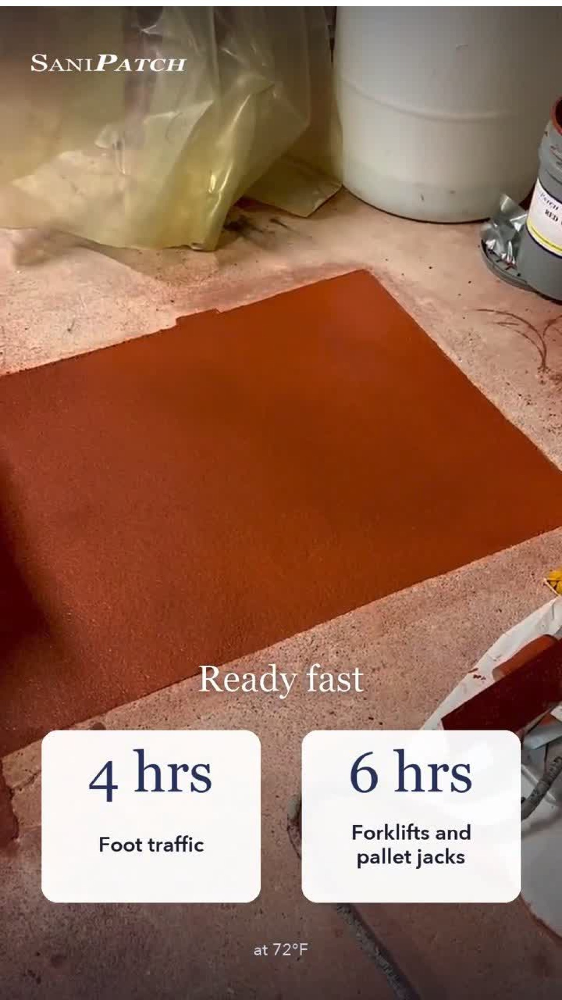
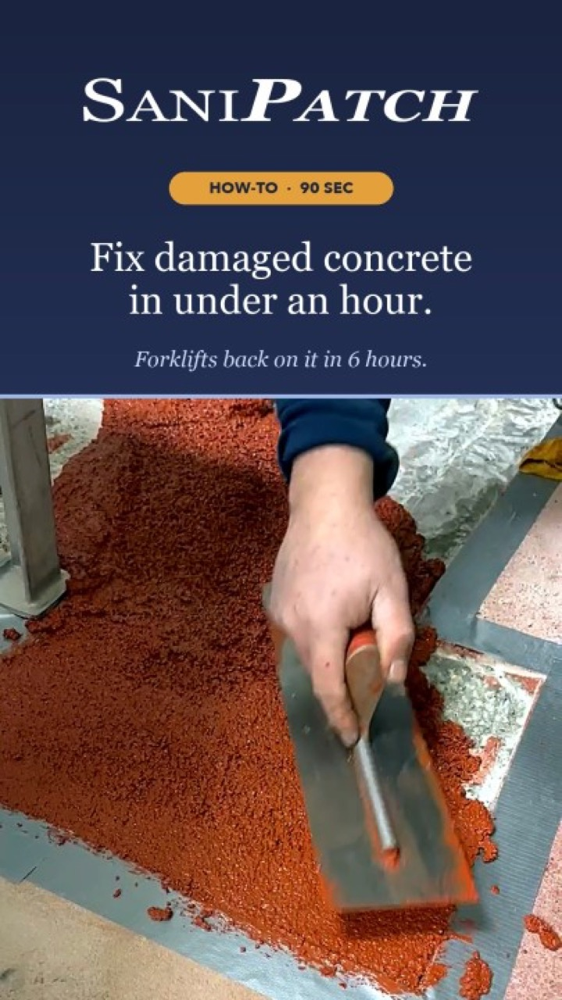

Every plant seems to have the same repair list. There is a spalled spot by the dock, a chipped edge around a drain, or a low hole by the wash station that holds water. Each item looks too small to build a shutdown around. Each one can still be noticed during an audit.

That gap between a visible problem and a practical repair window is why we built SaniPatch. It gives a plant maintenance team a way to handle the small floor damage that does not justify bringing in a full flooring crew.
Small Damage Still Counts
A repair does not have to cover a whole room to matter. A broken drain edge is still an edge that needs attention. A spalled dock spot still sits in a traffic area. A hole near a wash station still collects water. Leaving these items on a list because they are small does not make them disappear.
SaniPatch is a pre-measured, three-part polyurethane cement kit. It uses the same chemistry as our full SaniCrete systems, but it is packaged so a plant's own team can make a permanent repair between shutdowns. There is no need to guess at proportions or hold a small item until the next larger flooring project.
Prep, Mix, Pour, Roll, Broadcast
The LinkedIn video runs through the entire installation in about 90 seconds. The sequence is straightforward: prep, mix, pour, roll, and broadcast. The source image shows the repair material being worked into a prepared, taped section of floor.

The kit is not presented as a temporary cover. It is a polyurethane cement repair intended to stay in place. That matters for maintenance teams that want to cross an item off the list instead of moving it to the next shutdown.
Back to Plant Traffic
The finished frame gives the return-to-service timing at 72 degrees Fahrenheit. Foot traffic can return in four hours. Forklifts and pallet jacks can return in six hours. That is short enough to fit many repairs between production windows without turning a small damaged area into a larger scheduling problem.
The original post does not name a plant, room, square footage, or the size of the repair, so we will not fill in those blanks. The point is the process: plant staff can take a small, visible floor problem, complete the stated steps, and put the area back into service on a practical schedule.
If your maintenance team has the same list, send them the SaniPatch details. The dock spot, drain edge, and wash-station hole do not need to wait for a full flooring shutdown.